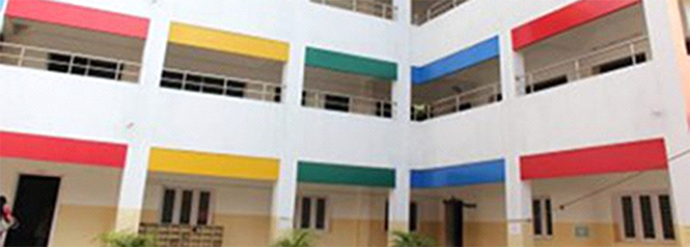

Campus Life
School Computer Lab
It is very big and spacious.
It have many moniters to attent the DA and also create projects.
School Classrooms
It has near to 1000 clasrooms.
All classrooms are maintained neatly by students and cleaners.

School
Was build in 2000.
KNMS began with the foundation of "Tiny Tots", a play school for children by Mrs. Geetanjali Satyamoorthy.
school achievements
Won first prize in inter school debate on environment pollution
Kamala Niketan Inter Talent Fest (KNITFEST) is a district level 2 day cultural extravaganza conducted by our Kamala Niketan Alumni Association every year. The fest is conducted for schools in and around Trichy, with events varying from Literary to Cultural events. The fest is conducted with the intent to foster and promote healthy competition amongst students.
KNMS's Achievement
76 DOCTORS [Merit – Past 3 years] 24 NIT’S [Merit – Past 3 years] 7 IIT’S [Merit – Past 3 years] 6 BIT’S [Merit – Past 3 years] 2 IISER [Merit – Past 3 years] 1 IISE [Merit – Past 3 years] 6 KVPY (Cleared)
Kamala Niketan Montessori School is a K-12 school, following the guidelines set by the Central Board of Secondary Education (CBSE)
Kamala Niketan Montessori School is a K-12 school, following the guidelines set by the Central Board of Secondary Education (CBSE). The curriculum at KNMS is interdisciplinary and integrated, reflecting life as our students experience it. We offer an all-encompassing curriculum that balances academic rigour with the creative arts, sports and community service, while focusing on life skills of adaptability, ethics, critical thinking, problem solving and mindfulness. The curriculum at KNMS cultivates new ways of thinking, seeing and processing ideas in children’s minds.
What's New
-
School Hostel
The school provides a boarding facility at its hostel for students in Class XI and Class XII. We have created a home away from home, with space for each student in a secure and caring environment. Our students are cared for and nurtured under experienced matrons and wardens.The facility has a girl’s hostel with a capacity of 100 students and a boy’s hostel with a capacity of 200 students. The hostels are in an air-conditioned dormitory styled arrangement, with common dining areas serving a well-balanced meal and an in-house laundry.For more information on the boarding facility please contact the school administration office.
-
Implemented Online Attendance Management System

1. Accuracy Humans are prone to error, even if we provide them with supporting computational devices. Automated attendance management systems ensure accurate time records and minimize the inevitable and costly errors with manual data entry. This accurate data thereby helps to provide accurate performance and payroll data.Monitoring and managing attendance manually can be a time-consuming, laborious, and expensive affair. It takes time to process paper sheets and time cards, create schedules, authorize leave and overtime, and create payroll manually. Free up precious administration time with an automated system that does it all for you, from keeping track of employee hours to automatically importing information into your payroll system. The time and effort saved combined with data accuracy helps in optimizing the use of resources which lead to increased productivity and improves profits. And many more like Visibility / Insights, Hassle Free Workflow Management, Flexibility, Integration / Configuration, Real-time tracking, Security, and Compliance
Our Alumini

Mala Sivakumar
Mrs. Geetanjali
Arav
.png)
Abinandan
Abinandan
He is a NIT scorer
https://en.wikipedia.org/wiki/Kamala_Niketan_Montessori_SchoolTo Know More